A full 3D modelling studio in your browser. Start from a blank workplane, a downloaded file or someone else’s model, make it exactly the size you need, check it will print, and send it to your slicer. Here’s the whole journey.
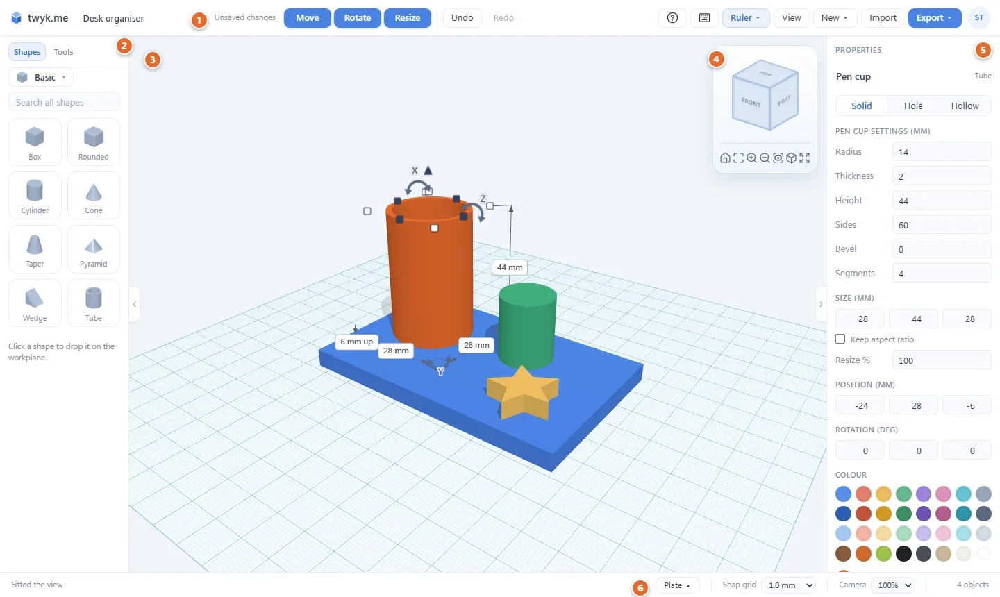
Sign in with Google and you land on Home: your models, and what’s trending in the Community. Everything saves to your account about a second after you change it.
The Home page Importing and exporting Tweak files from other sites
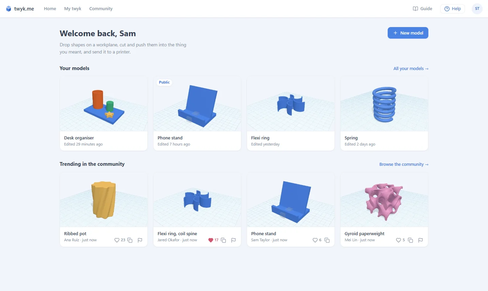
Click a shape and it lands on the workplane. The library goes far past boxes and cylinders: ten categories, from gears and stars to symbols, parts, home and building pieces, plus text.
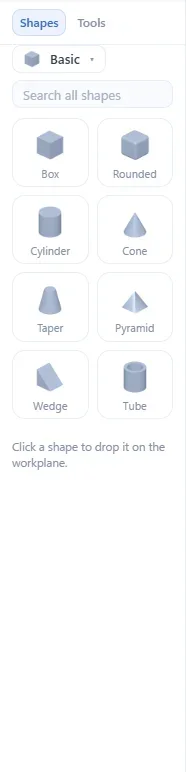
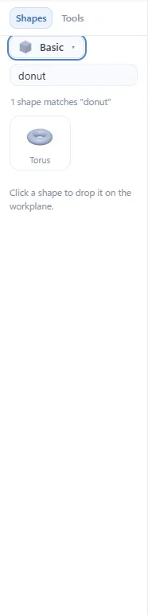
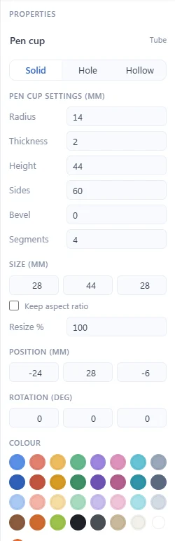
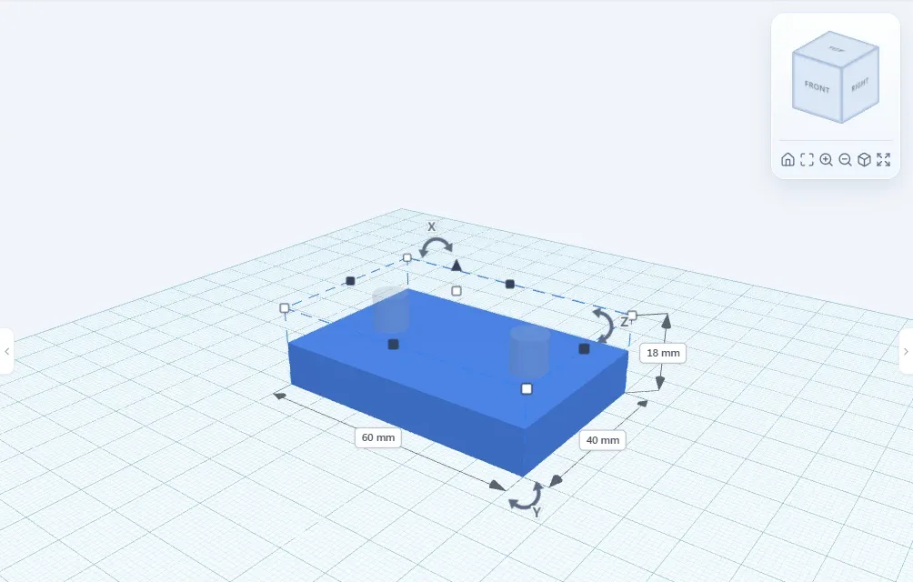
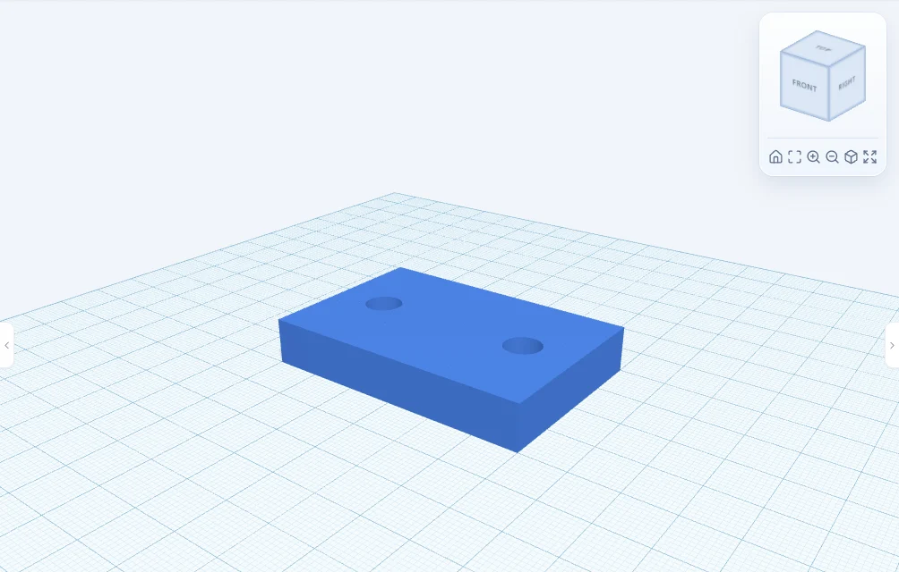
Parts that fit first time aren’t luck. Drag the grips for a rough size, then type the real numbers.
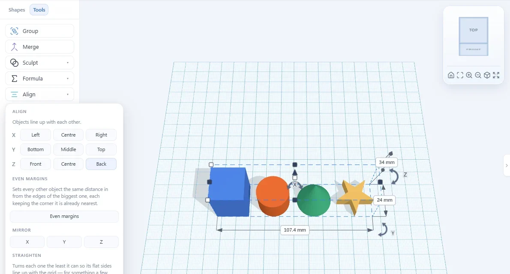
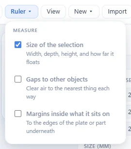
The Tools tab is where models get interesting. Every tool shows a see-through preview that updates as you change its settings, and nothing changes until you press Apply. Esc leaves the model exactly as it was.
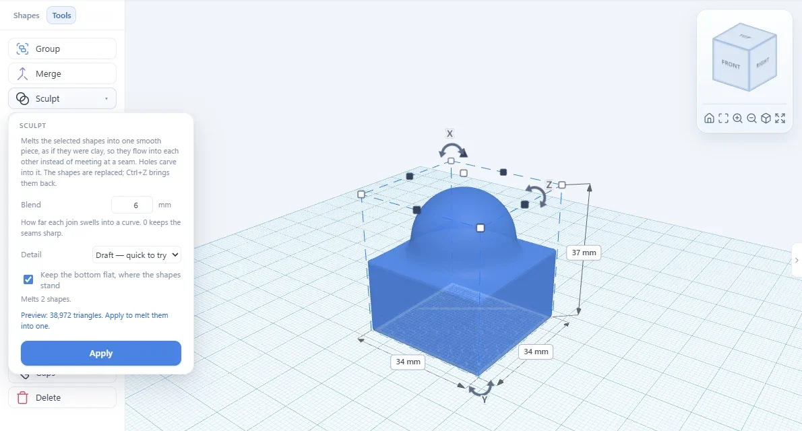
Melt two or more shapes into one smooth piece, like clay, with joins that flow instead of seams. Set how soft or sharp the blend is.
How it works ›Formula presets to start from
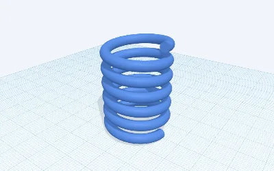
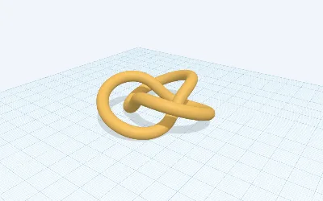
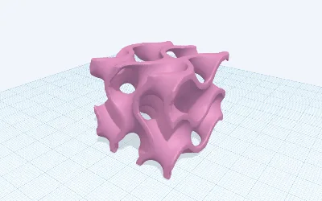
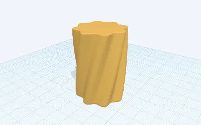
Also in the Tools tab: Split an imported model into editable parts, Push face to add or remove material, Lay flat, and Align and mirror.
Built for the problems that actually ruin prints: parts that snap, parts that fuse, and parts you can’t see to fix.
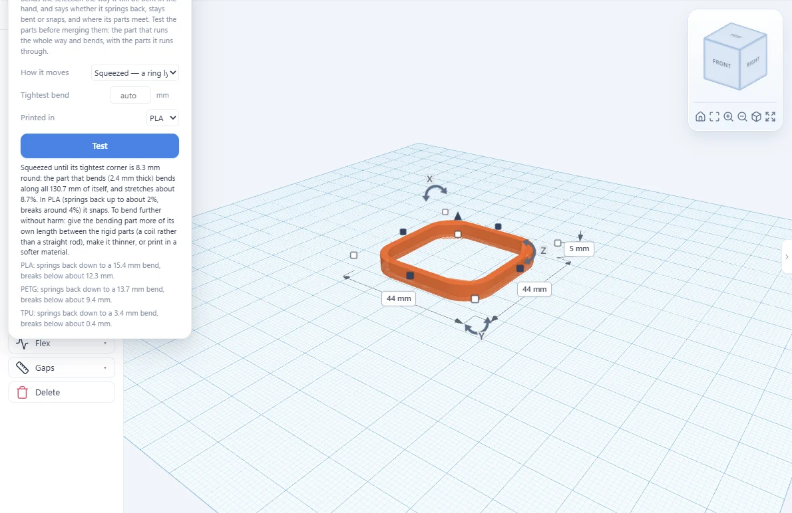
Bend it in the computer first. It says whether it springs back, stays bent or snaps, in PLA, PETG or TPU, and where.
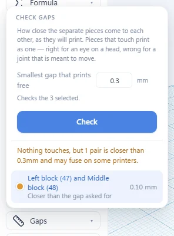
Lists every pair of parts that touch or come too close, so hinges and print-in-place pieces come off the bed apart.
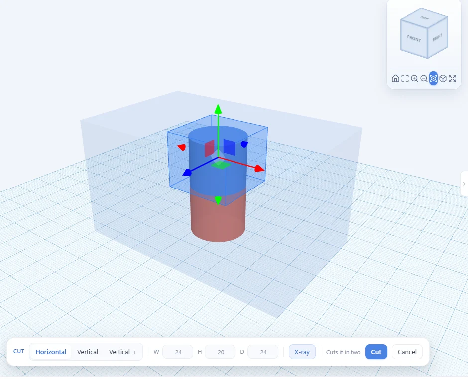
Everything else turns see-through, so a part hidden inside another can be picked, moved and cut.
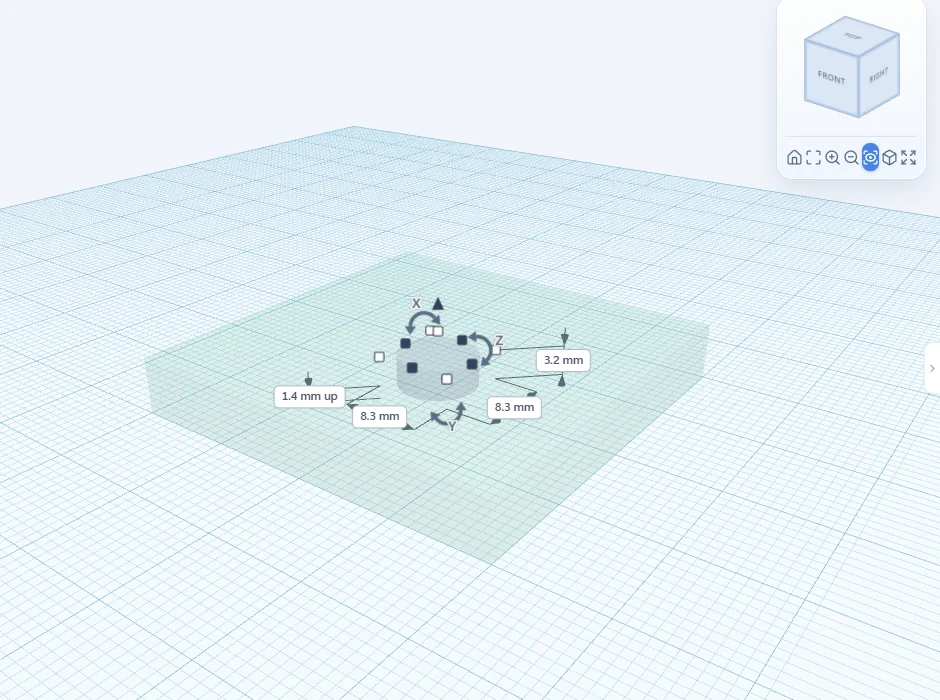
Seal a magnet, a nut or a weight inside a print, exactly where you measured it.
When it’s ready, the last few clicks:
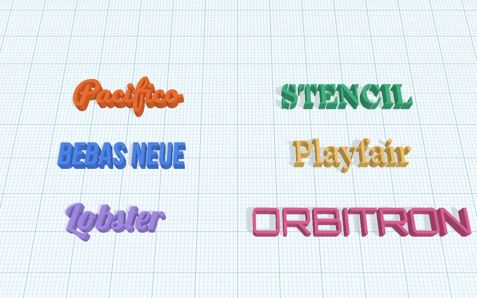
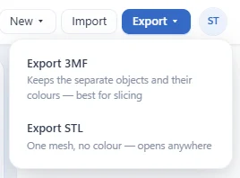
A few of the shortcuts people learn first. The full list is a click away in the editor.
Short tutorials that each teach a tool by making something real.
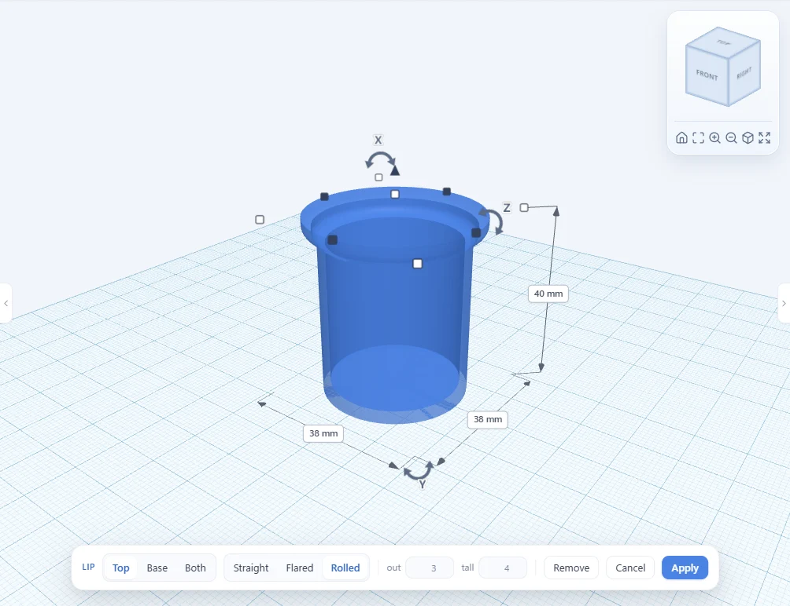
A pen pot with a rolled rimA hollow pot finished with a rolled rim from Lip. A spring from a formulaStart from a preset and set your own coils. A flexi ring that squeezesRepeat round a ring with a gap, then test it with Flex.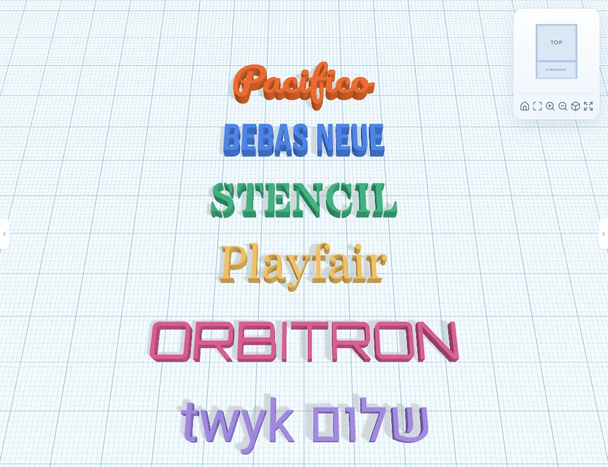
A name tag in your own fontRaised lettering in any of 48 fonts, or yours. A hidden pocket for a magnetSeal a magnet inside a print, placed with X-ray.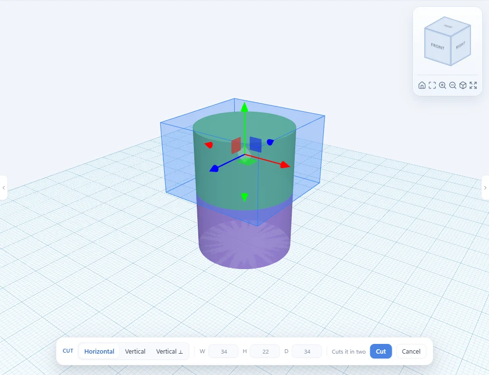
Cutting a big model in twoSplit a part that’s too big for your printer.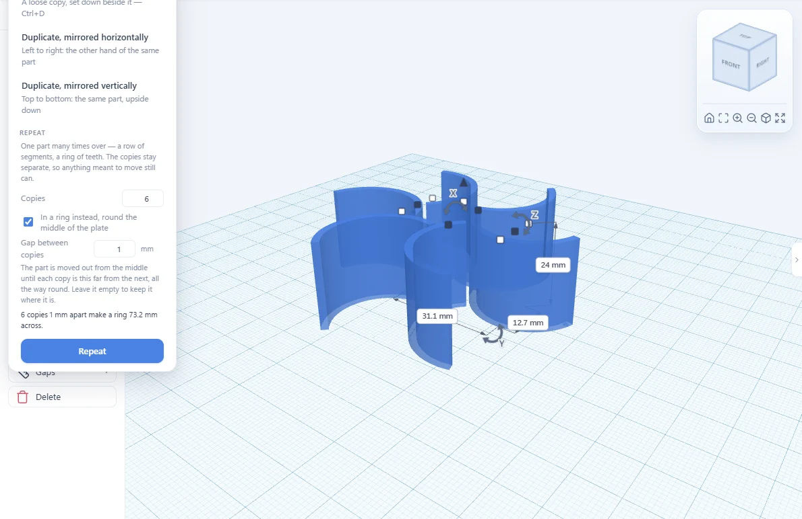
From twyk to your printerCheck the gaps, export and slice.Free, in your browser. Sign in with Google and drop your first shape.